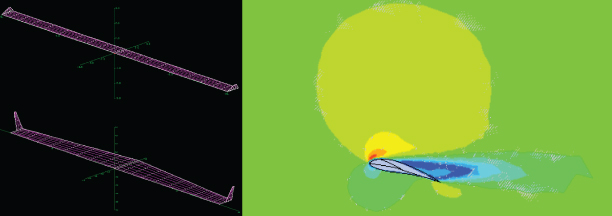

Intro

Hi, I’m Jeff Schwartzentruber — a Staff Machine Learning Scientist at eSentire and a builder-manager who ships high-reliability AI for cybersecurity. I design and deploy production GenAI systems in the SOC—LLMs with RAG, tool-use, and agentic orchestration—that automate investigations, raise detection fidelity, and close the analyst feedback loop. My focus is making AI safe, observable, and cost-efficient at scale.
Beyond industry, I serve as Adjunct Faculty at Dalhousie University and Special Graduate Faculty at the University of Guelph, co-leading research on unsupervised threat detection and log/graph analytics. I’m a CISSP and P.Eng., with 15+ years turning complex data and systems problems into measurable, operational outcomes.
- GenAI for Security: SOC-grade LLM platforms with RAG, toolchains, guardrails, evals, and red-teaming.
- AI Detection & Analytics: Unsupervised models, log abstraction, and graph-based threat attribution.
- Engineering Leadership: Profiling end-to-end bottlenecks, cutting latency, improving throughput, and building fault-tolerant pipelines.
Want the details? Explore my recent work and speaking/writing.
Work

Summary
Although my interests are vast, a large part of my portfolio is focused on cyber security, machine learning, predictive analytics, statistical analysis and process optimization. With that being said, I have compiled a list of my favorite projects (scroll down). These projects are broad in experiences, and range from statistical analytics on large datasets, coding machine learning solutions for the manufacturing sector and numerical modelling. I am always looking to apply and expand my knowledge in new and innovative applications, so be sure to periodically check out my latest conquests. If anything I have worked on sparks your interest or you would like to know more, feel free to contact me.
Log Abstraction for Information Security

When I speak about ML in cyber security, I typically discuss and contrast the traditional methods of threat detection versus the new methods employed using machine learning algorithms. The traditional static approach to security is to have a large corpus of IoCs (e.g. hashes, ips, etc.) from which you search our current security sources (i.e. NIDS, HIDS, SIEM, etc.). This differs from the dynamic approach which typically looks for anomalous behavior. Both methods are generally mature, but are flawed (in my opinion) on one major underpinning - the need for strict data normalization.
Data normalization is the bane of any security engineer and is exasperated by the industries inability to agree on a common log or event format, with many developing their own standards (i.e. Elastic ECS, Splunk CIM, CEF, etc.). This problem results in the difficult task of correlating events between environments and tools, thus reducing efficacy, visibility and coverage.
With the problem described, I have been working with the Dalhousie NIMS lab to develop methods that circumvent the need for strict log parsing. If ML can identify patterns in network traffic, it can definitely be used to identify and abstract various log characteristics, and in doing so unlocks a new perspective of security analytics. Although automated log parsing via ML is an area of active research, our research described in the following paper: Log Abstraction for Information Security: Heuristics and Reproducibility and presented at the ARES 2021 conference, is scoped to security use cases
This paper is part of a broader research project to develop a novel machine learning approach to security that avoids the need for static analysis and manual log parsing - a pure ML pipeline and methodology for security detection. Feel free to contact me, if you would like to know more.
TPO for HR Operational Intelligence
With my PhD coming to an end I began to ask myself – what’s next? Having spent over a decade in various technical fields, I FINALLY had some semblance of understanding regarding the direction of technology and the ‘state of the art’. In my mind, there was no bigger opportunity than in the field of artificial intelligence. With the explosion of big data and cluster computing, the current opportunities of ML seem endless. Having spent most of my academic and professional career engineering for the optimal process/design, coupled with my experience in algorithm development, it appeared that I was built for building ML platforms for optimization problems.
With that being said, I co-created a startup called Alitheia Technologies Inc, and partnered with friend who has an amazing business and sales acumen – thus creating a multi-disciplinary team that was ready to tackle the upcoming AI revolution. This company is centered on a platform I developed called Tailored Process Optimization (TPO), which can be thought of as the brain child of Lean-Six Sigma, ML and process optimization.
In our first case study, we looked at an HR dataset for a potential client and analyzed attrition. The outcomes of the model were vast, and truly surpassed our expectations. TPO was capable of generating an optimal candidate based on historical data, rank the current employees based on their risk of attrition, and provide strategic recommendations on how to best minimize attrition for high risk employees. The application of TPO is vast, and although my summary is brief, feel free to contact me, if you would like to know more.
Intelligent Nozzle Design using ML
This project was centered on AI design for the manufacturing sector. The objective of this project was to use ML to design the best possible nozzle for abrasive waterjet machining (AWJM). I presented this work at the 23rd International Conference on Waterjetting in Seattle ( Optimized abrasive waterjet nozzle design using genetic algorithms). Due to the very violent nature and complex flow phenomena associated with AWJ’s, nozzle optimization has relied on the classical iterative design process… until now.
This project all started when I read a very interesting paper by Dr. Narayanan et al. called Modelling of abrasive particle energy in water jet machining . In this paper, they present a 1D computational fluid dynamics (CFD) model for predicting abrasive particle velocities within 5% error. For anyone that knows anything about CFD, modelling a 3 phase, supersonic, compressible flow is just about the last thing you want to tackle, let only getting only 5% error. In seeing how revolutionary this model was, I reached out to Dr. Narayanan, who graciously allowed me use of his model. Since I already linked the paper, the rest is pretty much history. In summary, we used evolutionary ML algorithms to develop an optimization program. The output of the program was an optimal nozzle design configurations (i.e. nozzle and orifice diameters, mixing chamber sizes, etc); which generated, on average, a 15% increase in cutting efficiency!
AI Winglet Design

My early academic and professional career was focused on aerospace engineering applications. Ever since receiving my glider and private pilots license in my teens, I was hooked on learning everything I could about the development of flight – plus the title of being an Aerospace Engineering sounded pretty cool!
At the end of my undergraduate career, I had the opportunity to work on a research team that was developing AI design systems for a light aircraft manufacture. My role on the team was to develop an intelligent winglet design module. The objective was to take a generic airfoil and wing shape, and based on the various flight characteristics (i.e. airspeed, angle-of-attack, altitude etc.) of that aircraft, have my expert system design the best possible winglet. Having gone through the frustrating iterative design process in many case projects, I was eager to create something that would make my life easier and produce potentially better designs.
The model worked using MATLAB and an API between a CFD vortex lattice simulator called AVL. The dimensions of the winglet would be generated through my ML program, which was then fed into AVL, which would then output the various lift and drag metrics for that specific wing/winglet configuration. The model would then tune the winglet design to maximize the lift-to-drag ratio. As seen from the before and after photos in the header image, the ML program created considerable design improvements, resulting in a 12% increase in performance.
About

To give a quick bio of myself, I am an Canadian based security engineer, data scientist, developer, and reseacher with a PhD in Mechanical Engineering that focused on process optimization, predictive analytics and statistical analysis. My professional journey has pivoted me to a career in cyber security and various R&D activities. I have been fortunate throughout my career to work with many reputable companies (i.e. Interac, 2Keys, Bank of Canada, MAGNA, Bauer, etc.), which have provided me with opportunities to continually build upon my skillsets while challenging me to push the boundaries of applied research and technology.
For more information on my professional career, feel free to visit my LinkedIn profile.
Below is a list of peer-reviewed publications:
Log Abstraction for Information Security: Heuristics and Reproducibility
Modelling of delamination due to hydraulic shock when piercing anisotropic carbon-fiber laminates using an abrasive waterjet
Prediction of Surface Roughness in Abrasive Waterjet Trimming of Fiber Reinforced Polymer Composites
A Usability Study for Electronic Flight Bag (EFB) Flight Planning Applications on Tablet Devices for Ab-initio Pilots
(Forthcoming) Measurement of abrasive particle velocity and size distribution in high pressure abrasive slurry and water micro-jets using a modified dual disc anemometer
Optimized abrasive waterjet nozzle design using genetic algorithms
Abrasive waterjet micro-piercing of borosilicate glass
Erosive Smoothing of Abrasive Slurry-Jet Micro-machined Channels in Glass, PMMA, and Sintered ceramics: Experiments and Roughness Model
Abrasive waterjet machining of small features in composite materials